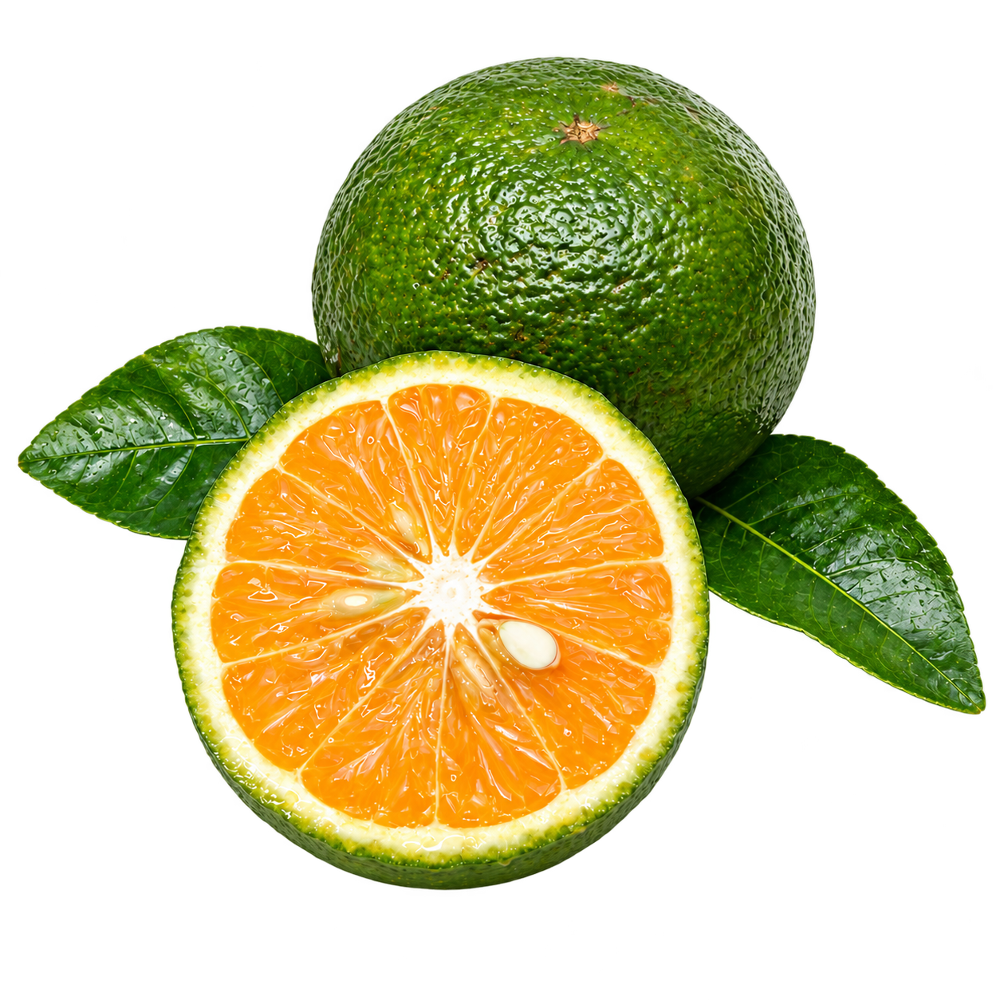
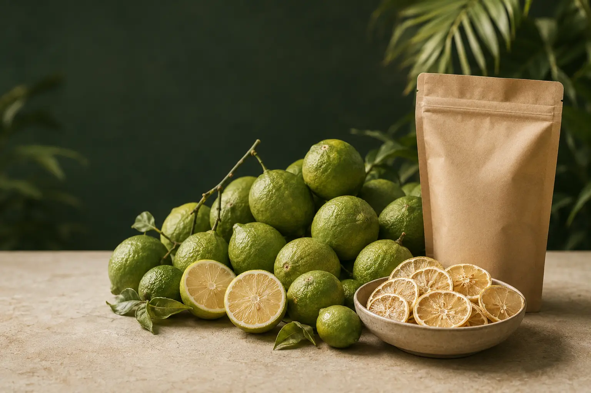
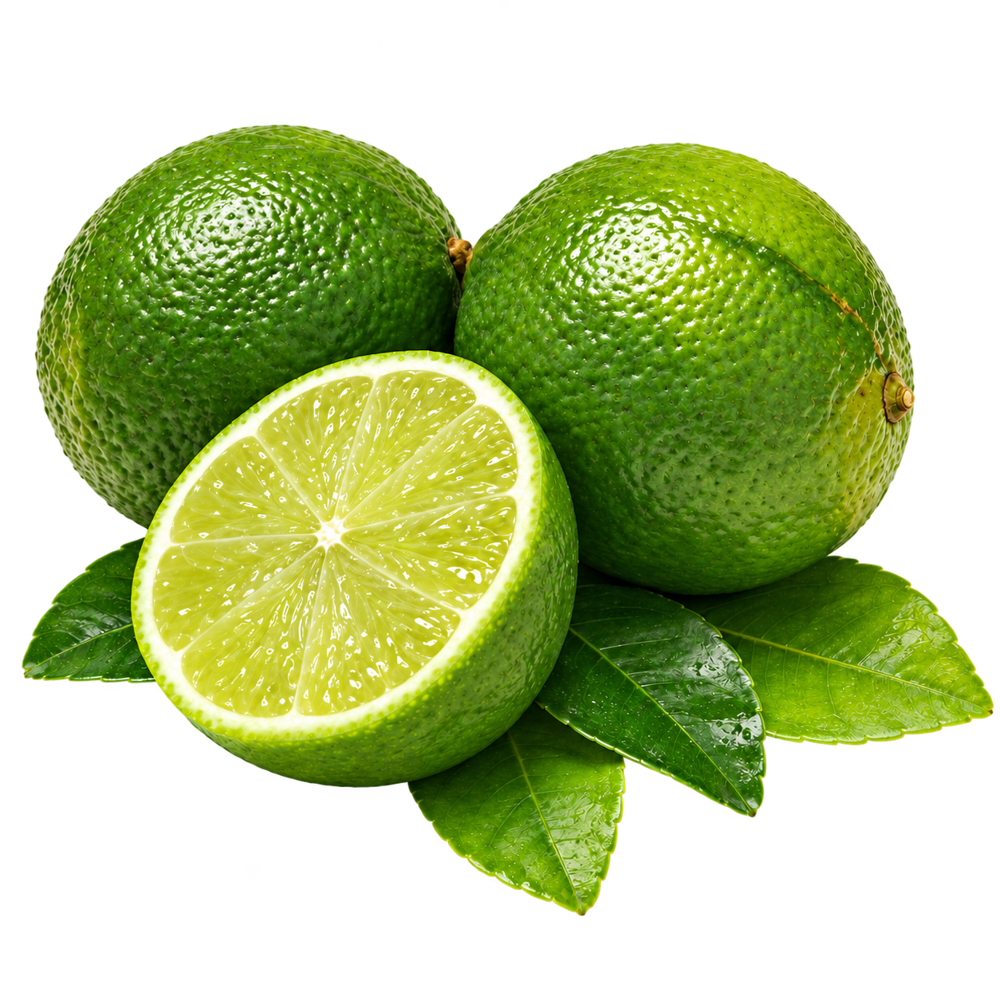
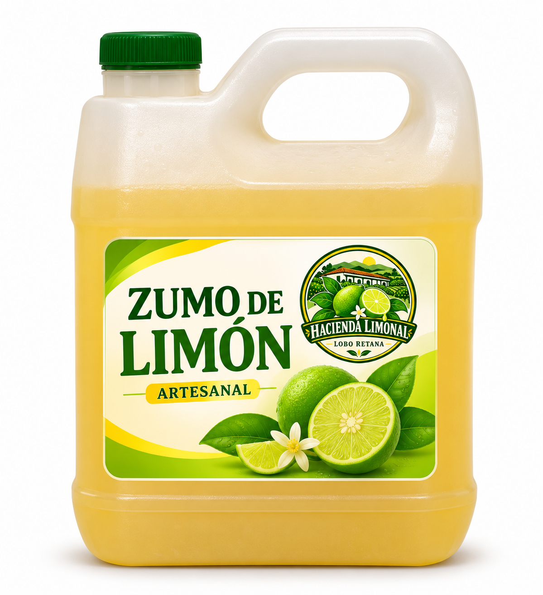

Fresco
01 — Fresco
Limón mandarina
Aromático, jugoso y con el carácter cítrico que distingue a la cocina costarricense.
Cotizar producto
Cosecha costarricense · San Ramón
Limón mandarina, limón mesino y zumo de limón elaborados en San Ramón. Productos honestos para cocinas, bebidas y negocios.
Nuestros productos
Del sabor fresco de la cosecha a la practicidad del zumo de limón para tus recetas y bebidas.

01 — Fresco
Aromático, jugoso y con el carácter cítrico que distingue a la cocina costarricense.
Cotizar producto
02 — Fresco
Una opción versátil para consumo diario, restaurantes y pedidos de mayor volumen.
Cotizar producto
03 — Artesanal
Zumo de limón artesanal para preparar bebidas, aderezos y recetas con todo el sabor cítrico.
Cotizar productoDe nuestra finca
Hacienda Limonal Lobo Retana nace entre árboles de limón mandarina y mesino en las montañas de Alajuela. Conocemos el producto desde su origen y atendemos cada pedido de forma directa.
¿Tenés un negocio? ConversemosLimón mandarina y mesino de producción local.
Organizamos cada pedido según su uso y presentación.
Limones frescos y zumo de limón para tus bebidas y recetas.
Del producto fresco a nuevas formas de servirlo.
Más posibilidades
Zumo de limón para bebidas, cocina, repostería y eventos.
El toque cítrico para preparar tus cócteles favoritos.
Una base práctica para limonadas y bebidas refrescantes.
Sabor cítrico para postres, glaseados y tus recetas favoritas.
Una opción práctica para preparar bebidas para tus invitados.
Hacienda Limonal Lobo Retana
Fresco cuando lo necesitás. Práctico cuando lo imaginás.
Lo esencial
Si necesitás una cantidad o presentación especial, escribinos. Queremos ayudarte a encontrar la opción correcta.
Sí. Coordinamos pedidos para hogares, comercios, restaurantes y otros negocios. Escribinos por WhatsApp con la cantidad aproximada que necesitás para recomendarte la mejor presentación.
Nuestra producción se encuentra en la zona de San Ramón de Alajuela, Costa Rica.
Podés iniciar tu pedido por WhatsApp. Confirmamos disponibilidad, cantidad, presentación y la opción de entrega que mejor se adapte a vos.
Podés usarlo para preparar limonadas, cócteles, aderezos, marinados y repostería. Consultanos las presentaciones disponibles para tu hogar, negocio o evento.
¿Listo para pedir?
Contanos qué producto necesitás, la cantidad aproximada y tu ubicación. Te respondemos por WhatsApp.
Empezar mi pedido Atención directa · San Ramón, Alajuela